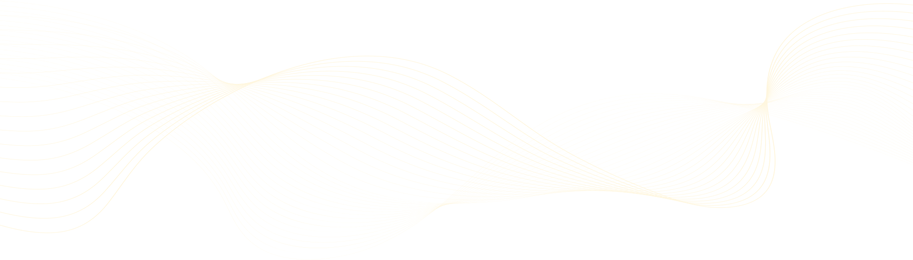
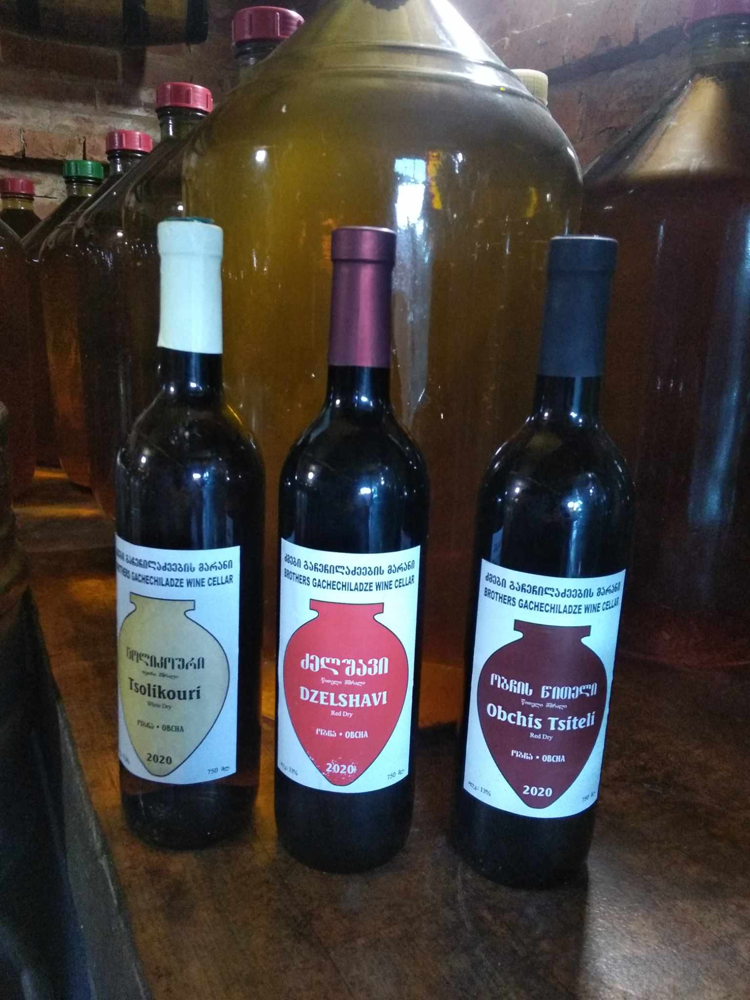

ძმები გაჩეჩილაძეების მარანი
ძმები გაჩეჩილაძეების საოჯახო მარანი ბაღდათის მუნიციპალიტეტის სოფელ მეორე ობჩაში მდებარეობს.ძმები თავიანთ ღვინოს საკუთარ ვენახებში მოწეული ცოლიკაურის,ციცქას,კრახუნას,ძველშავის და ჩხავერის მოსავლით ამზადებენ.მარანში 20-მდე ქვევრს, საწნახელს, ორშიმოებს, ყანწებს, თიხის დოქებს, ფიალებს, ღვინის სადეგუსტაციო კუთხესა და ჩანაწერების წიგნს ნახავთ.
მასპინძლები სტუმრებს უზიარებენ ღვინის დაყენების ტექნოლოგიის ისტორიას, სთავაზობენ ღვინის დეგუსტაციასა და იმერული სუფრა მარანში

